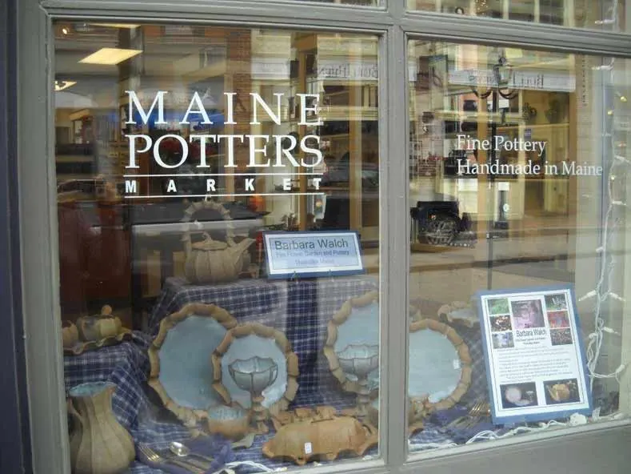

Pinch pottery & cottage gardens
Handbuilt stoneware, perennials and cut flowers, just outside the village of Thorndike, in central Maine.


Want a piece? Call, write, or come by.
Pottery has been selling faster than we can make it, so online ordering is on hold for now. You can still get a piece in a few good places.
Visit the studio
By appointment, year round. One-of-a-kind pieces are scattered through the gardens. Please call ahead.
The Maine Potters Market
376 Fore Street, Portland. A potter-owned gallery, open year round.
Belfast Farmers' Market
Fridays 9am to 1pm, May through September: cut flowers, plants, a small selection of vases, and willow baskets by Charlie Krause.
Shaped by hand, pinch by pinch
Barbara has been making handbuilt pottery since 1973. She is one of only a few American potters who work primarily with the pinch technique.
Her stoneware dinnerware is distinctive and unusual. Her work recalls forms in nature, with an organic yet whimsical quality, and colors both earthy and gemlike. It is all functional, from vases to bowls to her signature teapots.
- 1973making handbuilt pottery
- 1989studio in Thorndike
- Stonewareand some porcelain


From the studio shelves
Bowls that nest, cups with petals, spoons by the basket.


Fire Flower Gardens
“I wound up with ten acres, most of it hayfield and woods. Now at least one and a half acres are gardens of one sort or another.”
A small farm and a large garden that grew out of a love of flowers. Fire Flower Garden is certified organic by MOFGA, in USDA Zone 4, although Barbara has grown lavender successfully for many years. Whimsical pottery critters by Charlie Krause, Barbara's husband, may be lurking almost anywhere.
- SpringPots of violas, newly dug field-grown perennials, plenty of daffodils.
- SummerBouquets in every hue, from zinnias to calla lilies, and tiny tussie-mussies with Johnny Jump-Ups.
- Late seasonDried flowers from August, then a few weeks of dried flowers, pumpkins and gourds at the Belfast market.
The roadside plant stand is self-service and open anytime during the summer.



Come out to Thorndike
Call ahead if you want to talk gardening, or visit the studio for pottery or dried flowers. Studio visits are by appointment, year round.
We are a quarter mile down Knox Station Road, a few miles from the village of Thorndike. Look for our red signs with white lettering on Route 139.
- 2.5 miles from the junction of Routes 139 & 220 in Thorndike
- 6.5 miles from the junction of Routes 139 & 7 in Brooks
33 Knox Station Road
Thorndike, ME 04986 207-568-3736
A one-person business: if you get the answering machine, leave your name and number and Barbara will call you back.
Updates on Facebook.